Que montre le doigt de Stanislas ?What is Stanislas pointing at?
6°10′59,78″ E
Prolongée tout droit, la direction de son index devient une ligne de 39 998 kilomètres qui fait le tour de la Terre. Un projet de Daniel Denise, relevé par l’IGN en 2004 et exposé aux Galeries Poirel de Nancy en 2005.Extended straight ahead, the direction of his index finger becomes a 39,998-kilometre line around the Earth. A project by Daniel Denise, surveyed by the IGN in 2004 and exhibited at the Galeries Poirel in Nancy in 2005.
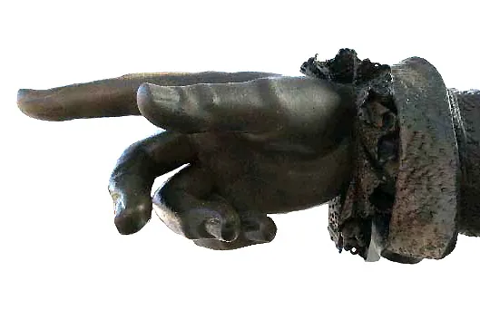
La questionThe question
Sur la place qui porte son nom, la statue de Stanislas Leszczynski, roi de Pologne et dernier duc de Lorraine, tend l’index. Elle est l’œuvre du sculpteur Georges Jacquot.On the square that bears his name, the statue of Stanislas Leszczynski, King of Poland and last Duke of Lorraine, points its index finger. It is the work of the sculptor Georges Jacquot.
La commission qui l’a commandée l’affirme : « Stanislas désigne le médaillon du portrait de Louis XV », au sommet de l’arc Héré.The commission that ordered it says so: Stanislas points at the medallion portrait of Louis XV, at the top of the Héré arch.
Au pied du socle, Daniel Denise fait un autre constat : « le doigt du roi de Pologne ne montre pas l’effigie de Louis XV ». Alors, que montre-t-il ?Standing at the foot of the plinth, Daniel Denise sees something else: the King of Poland’s finger does not point at Louis XV’s effigy. So what is it pointing at?
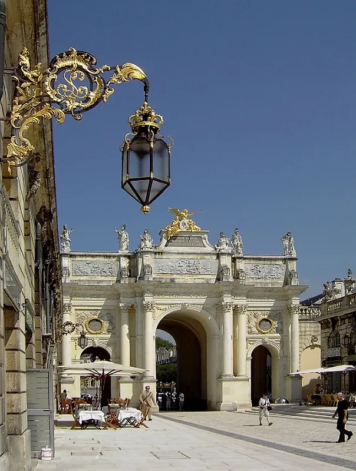
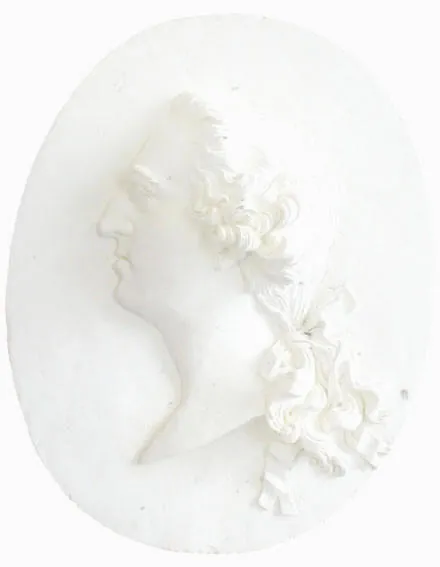
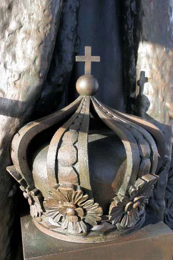
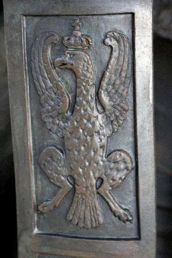
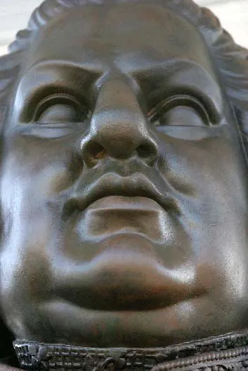
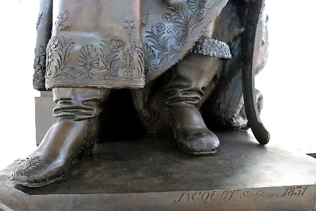
Détails de la statue en bronze, photographiés pour le site. La signature du sculpteur se lit sur le socle.Details of the bronze statue, photographed for the website. The sculptor’s signature can be read on the base.
6 mai 2004, place Stanislas6 May 2004, Place Stanislas
L’IGN mesure l’indexThe IGN measures the finger
Une nacelle hisse les géodésiens de l’Institut géographique national jusqu’à la main de la statue.An aerial platform lifts the surveyors of the French National Geographic Institute up to the statue’s hand.
Une antenne GPS est posée sur l’index, d’autres stations relèvent les points au sol. Leur calcul donne la direction exacte que montre le doigt.A GPS antenna is placed on the index finger while other stations survey points on the ground. Their calculation gives the exact direction the finger points to.
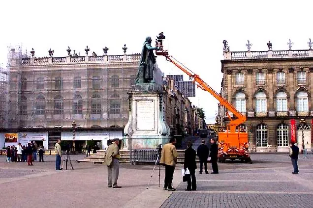
6.5.2004 / 01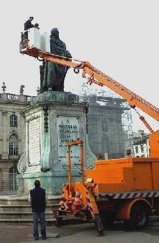
6.5.2004 / 02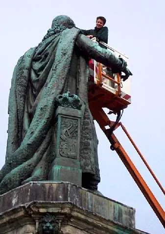
6.5.2004 / 03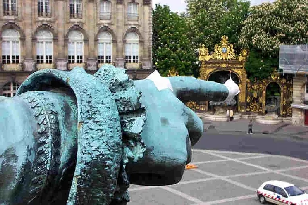
6.5.2004 / 04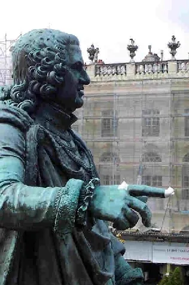
6.5.2004 / 05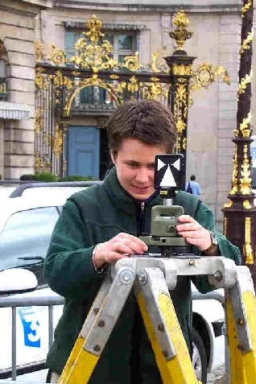
6.5.2004 / 06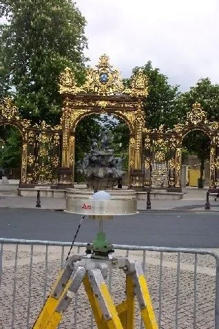
6.5.2004 / 07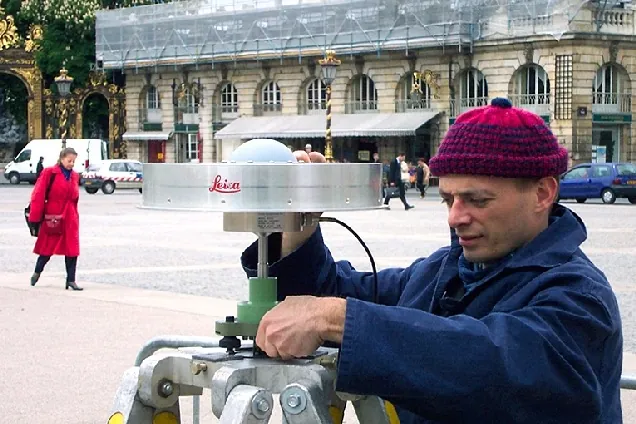
6.5.2004 / 08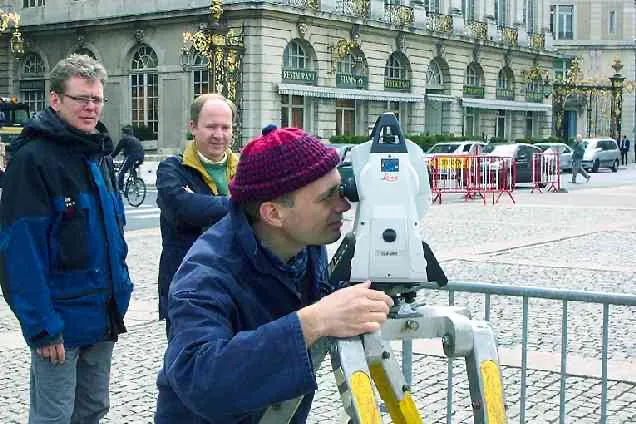
6.5.2004 / 09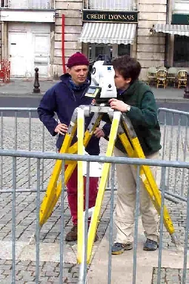
6.5.2004 / 10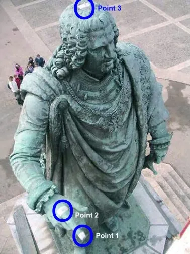
« Mesurez ce doigt »“Measure this finger”
Le lendemain, L’Est Républicain raconte comment, à l’initiative d’un plasticien nancéien, l’index de Stanislas a fait l’objet de toutes les attentions des ingénieurs de l’Institut géographique.The next day, L’Est Républicain told how, at the initiative of a Nancy artist, Stanislas’s finger received the full attention of the Geographic Institute’s engineers.
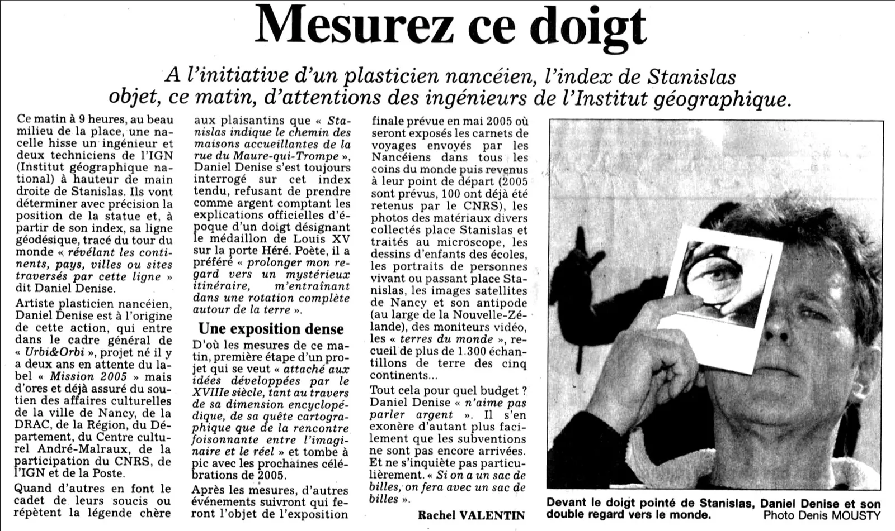
48°41′36,77″ N, 6°10′59,78″ E
La Terre au bout du doigtThe Earth at your fingertip
Prolongée sans jamais tourner, la direction de l’index devient une ligne géodésique. Elle traverse l’Europe, le Groenland et l’Amérique du Nord, longe l’Antarctique, remonte l’Afrique et revient à Nancy.Extended without ever turning, the direction of the finger becomes a geodesic line. It crosses Europe, Greenland and North America, skirts Antarctica, travels up Africa and comes back to Nancy.
Faites défiler pour suivre la ligne.Scroll to follow the line.
Tracé recalculé pour cette maquette à partir des valeurs publiées sur le site (point de départ, azimut, longueur). Illustratif.Route recomputed for this mock-up from the values published on the website (starting point, azimuth, length). Illustrative.
Le tracé de l’IGNThe IGN’s route
Le service de géodésie de l’IGN calcule un point tous les 1 000 kilomètres. Quand les logiciels atteignent leurs limites, vers le 21e point, le calcul repart du 19e, puis du 38e, avec un nouvel azimut. La ligne est complète lorsque sa latitude redevient celle du départ.The IGN’s geodesy department computes one point every 1,000 kilometres. When the software reaches its limits, around point 21, the calculation restarts from point 19, then from point 38, with a new azimuth. The line is complete when its latitude returns to that of the start.
Images de la Terre : NASA Blue Marble, Reto Stöckli. Animation 3D de l’exposition : Andrew Wayne, Planetary Visions (Royaume-Uni).Images of the Earth: NASA Blue Marble, Reto Stöckli. 3D animation in the exhibition: Andrew Wayne, Planetary Visions (UK).
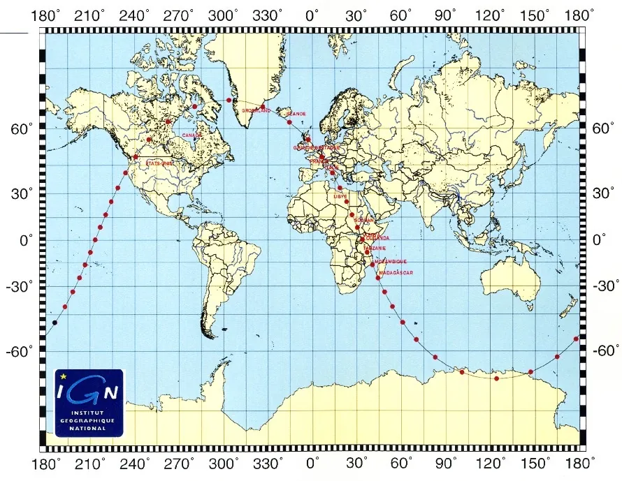
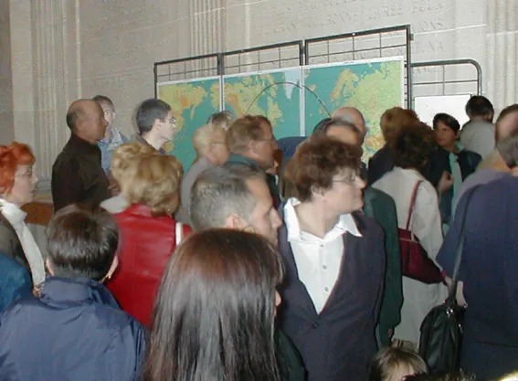
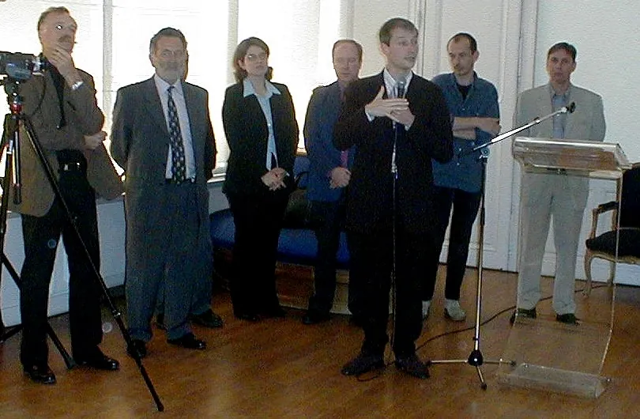
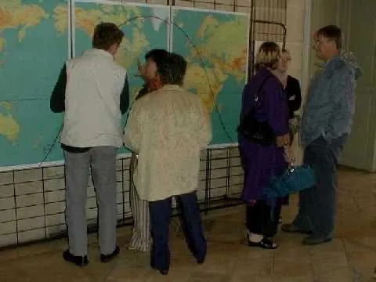


Depuis 1999Since 1999
La Bibliothèque des TerresThe Library of Soils
Daniel Denise collecte des échantillons de terre venus du monde entier, avec les lettres, emballages et photos qui les accompagnent.Daniel Denise collects soil samples from all over the world, along with the letters, packaging and photos that come with them.
En 2005, rangées en flacons sur la mezzanine des Galeries Poirel, ces terres forment une bibliothèque. Verrerie réalisée avec Copper Glass (Yannick Hoetzel et Mathieu Grodet), création musicale de Jérôme Bourdellon.In 2005, stored in glass jars on the mezzanine of the Galeries Poirel, these soils formed a library. Glassware made with Copper Glass (Yannick Hoetzel and Mathieu Grodet), music by Jérôme Bourdellon.

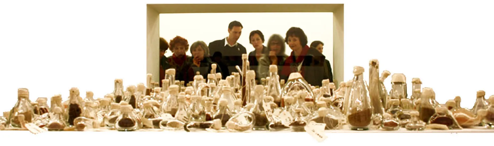


Le Livre sous la PlaceThe Book under the Square
Septembre 2004September 2004
Sous un chapiteau du Livre sur la Place, le public écrit et dessine les pages d’un livre unique.Under a marquee at the Livre sur la Place book fair, the public writes and draws the pages of a one-off book.
15 avril 200515 April 2005
Relié de rouge et de bleu, le livre est enfoui sous la place Stanislas, alors en pleine rénovation.Bound in red and blue, the book is buried under Place Stanislas, then being renovated.
Salle 5 de l’expositionRoom 5 of the exhibition
Ses pages, scannées avant l’enfouissement, sont montrées aux visiteurs des Galeries Poirel.Its pages, scanned before the burial, are shown to visitors at the Galeries Poirel.
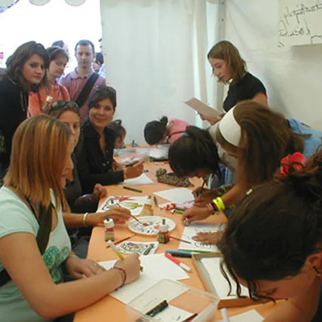
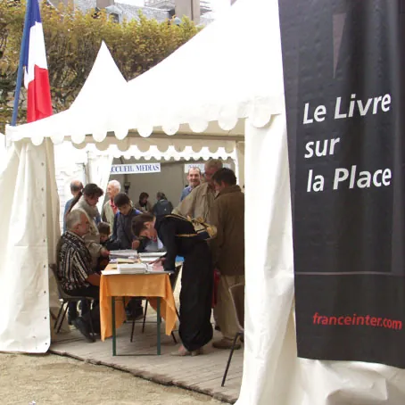
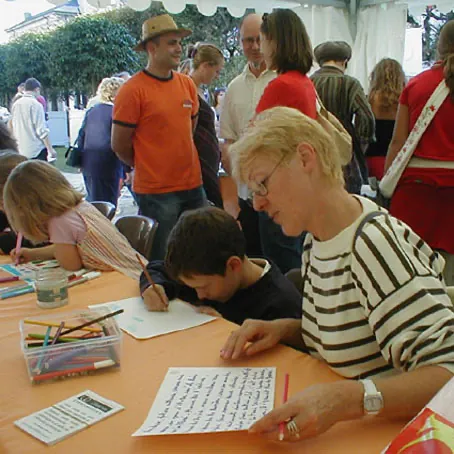
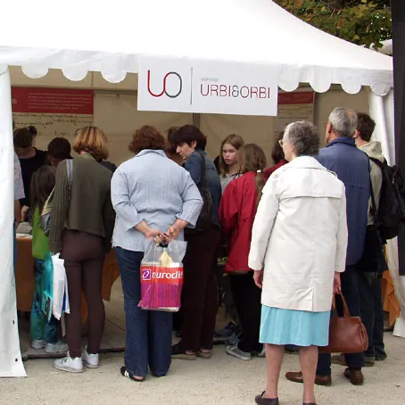
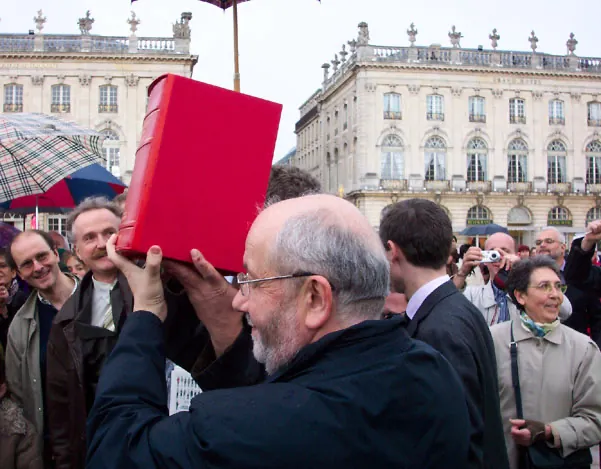
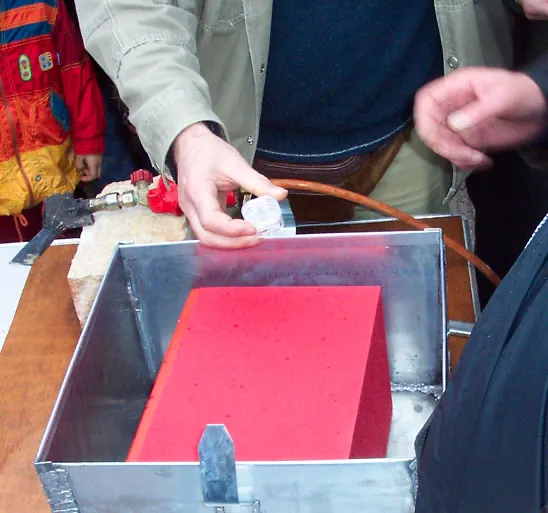
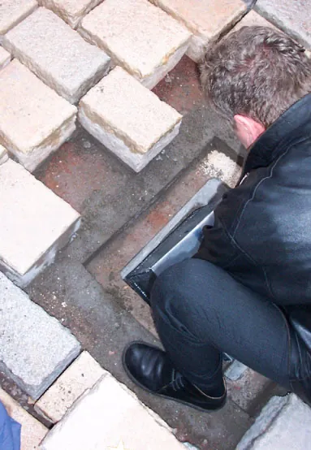
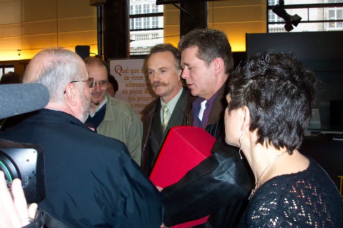
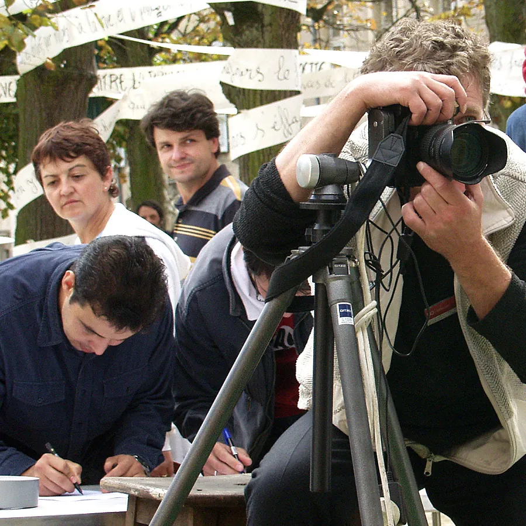
Daniel Denise
Photographe et plasticien, né en 1955 à Nancy, où il vit et travaille.Photographer and visual artist, born in 1955 in Nancy, where he lives and works.
Ses projets mêlent l’art, la science et la participation du public : des Nancéiens qui posent devant son objectif, des terres envoyées du monde entier, un sondage sur les formes et les couleurs. Passionné de volcans, il a parcouru l’Auvergne, La Réunion, les Açores, Lanzarote, l’Islande et le Kamtchatka.His projects combine art, science and public participation: Nancy residents posing for his camera, soils sent from all over the world, a survey on shapes and colours. A volcano enthusiast, he has travelled to the Auvergne, Réunion, the Azores, Lanzarote, Iceland and Kamchatka.
Le site Urbi & Orbi a été créé à l’occasion de l’exposition par son frère, Bruno Denise, qui l’a enrichi depuis d’une exploration historique de Stanislas et de Nancy.The Urbi & Orbi website was created for the exhibition by his brother, Bruno Denise, who has since expanded it with a historical exploration of Stanislas and Nancy.
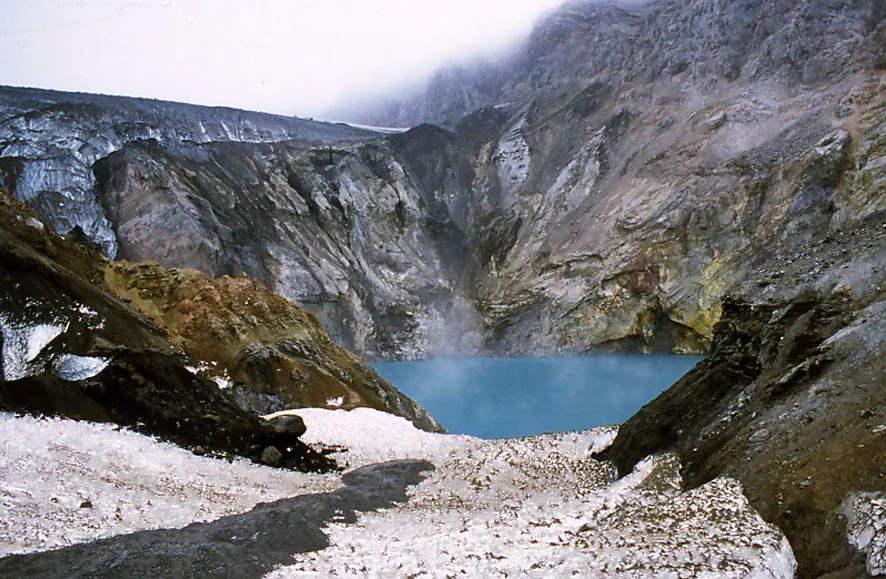
RepèresMilestones
Faites glisser la friseDrag the timeline
-
1996
Les yeux de la TerreLes yeux de la Terre
Maison des Dîmes, Gondreville : 36 artistes autour de la pomme de terre (organisation).Maison des Dîmes, Gondreville: 36 artists around the potato (curated).
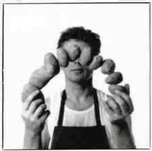
-
1999
RegainRegain
Installation épistolaire, Galerie Poirel, Nancy.Installation of letters, Galerie Poirel, Nancy.
-
2001
C’est flou ce que c’est prèsC’est flou ce que c’est près
Photographies, Galerie de Visu, Nancy.Photographs, Galerie de Visu, Nancy.
-
2002
Par naturePar nature
Installation, Galerie TEM, Goviller.Installation, Galerie TEM, Goviller.
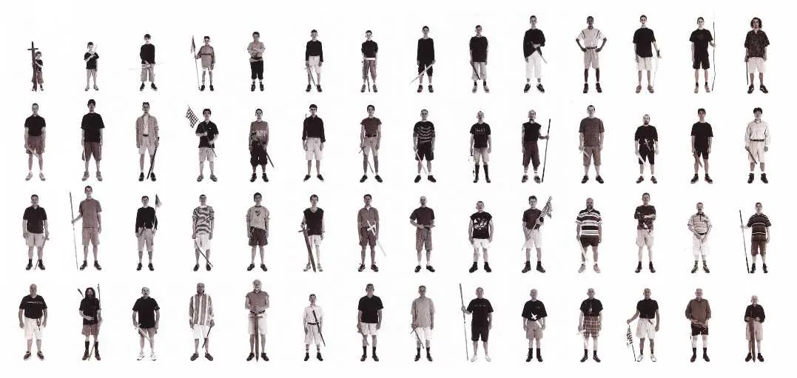
-
2005
Stanislas Urbi & OrbiStanislas Urbi & Orbi
Galeries Poirel, Nancy, 15 avril-12 juin. Plus de 6 000 visiteurs.Galeries Poirel, Nancy, 15 April-12 June. More than 6,000 visitors.

-
2014
Le sens communLe sens commun
Galerie Lillebonne, Nancy, 12 juin-12 juillet. Avec un sondage sur les formes et les couleurs.Galerie Lillebonne, Nancy, 12 June-12 July. With a survey on shapes and colours.
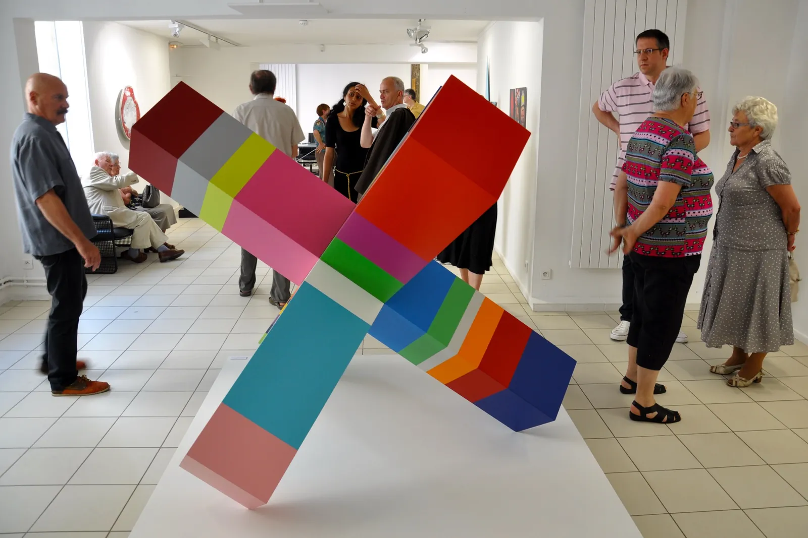
-
2016
FragileFragile
La Douëra, Malzéville, 5-27 novembre.La Douëra, Malzéville, 5-27 November.
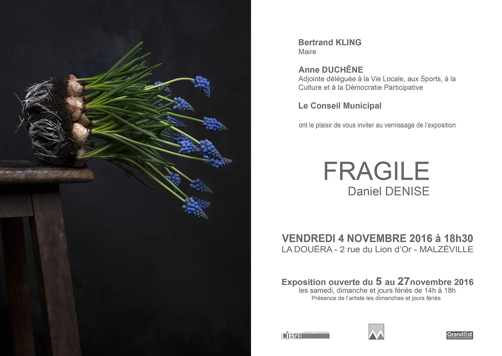
-
2016
Jardins rêvés du square LouvainJardins rêvés du square Louvain
Exposition photo, Festival du film de chercheur.Photo exhibition, Researchers’ Film Festival.
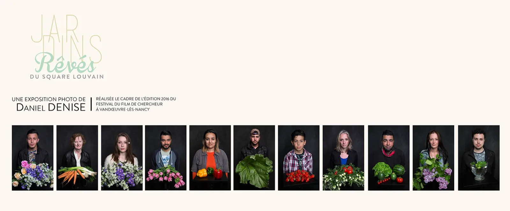
-
2017
HorizonHorizon
Livre de photographies, éditions ARP2.Photo book, ARP2.
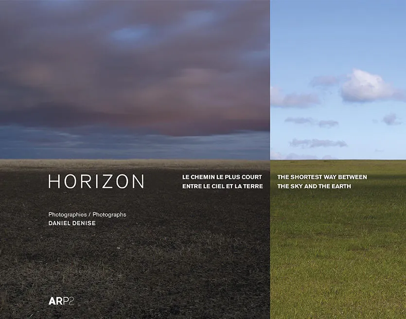
-
2017
Petits paysagesPetits paysages
Muséum-Aquarium de Nancy.Muséum-Aquarium de Nancy.
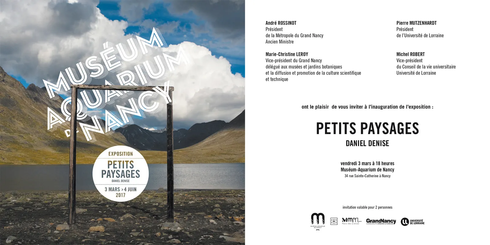
26 novembre 175526 November 1755
Stanislas et NancyStanislas and Nancy
Le site est aussi une exploration historique et touristique, menée par Bruno Denise.The website is also a historical and tourist exploration, led by Bruno Denise.
Biographie et chronologie de Stanislas Leszczynski, genèse de la place Royale inaugurée le 26 novembre 1755, grilles et fontaines de Jean Lamour et Barthélemy Guibal, art de vivre et gastronomie du XVIIIe siècle, et plus de 70 ouvrages de cuisine anciens.Biography and chronology of Stanislas Leszczynski, the genesis of the Place Royale inaugurated on 26 November 1755, gates and fountains by Jean Lamour and Barthélemy Guibal, 18th-century lifestyle and gastronomy, and more than 70 old cookery books.
Du XVIe siècle à l’index de StanislasFrom the 16th century to Stanislas’s finger
29 arrêts29 stopsLa dernière réalisation commandée par StanislasThe last work commissioned by Stanislas
12 arrêts12 stopsDe la place Stanislas à l’église de BonsecoursFrom Place Stanislas to Bonsecours church
28 arrêts28 stopsLes itinéraires sur le site actuelThe walks on the current website
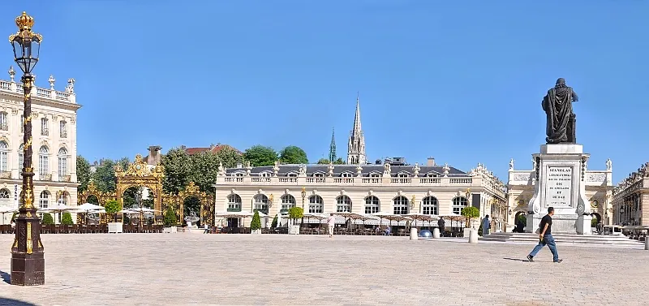
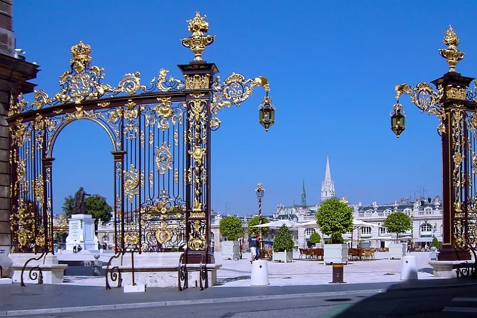
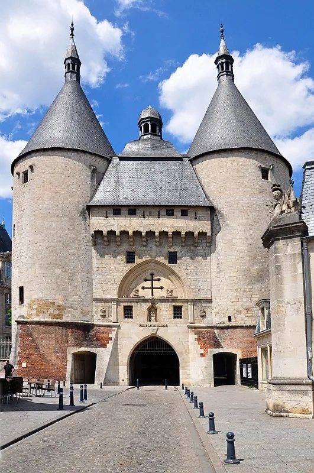
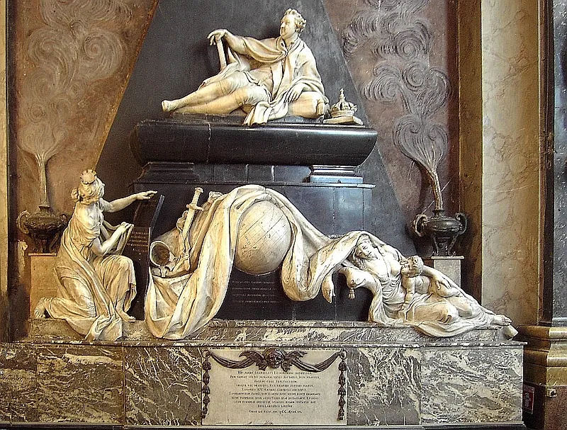
2004-2005
Dans la presseIn the press
De la mesure du doigt à la fin de l’exposition, L’Est Républicain, Le Républicain lorrain, la télévision régionale et la presse culturelle ont suivi le projet.From the measuring of the finger to the end of the exhibition, L’Est Républicain, Le Républicain lorrain, regional television and the cultural press followed the project.
Survolez les coupures, cliquez pour les lire.Hover over the clippings, click to read them.
Partenaires et amis : IGN, CNRS, Étienne Deloule, Reto Stöckli (Blue Marble Zurich), Établissements Cochinaire, étudiants de l’école d’architecture de Nancy, DRAC Lorraine, Ville de Nancy, CCAM de Vandœuvre, L’Est Républicain, M6.Partners and friends: IGN, CNRS, Étienne Deloule, Reto Stöckli (Blue Marble Zurich), Établissements Cochinaire, students of the Nancy school of architecture, DRAC Lorraine, City of Nancy, CCAM Vandœuvre, L’Est Républicain, M6.
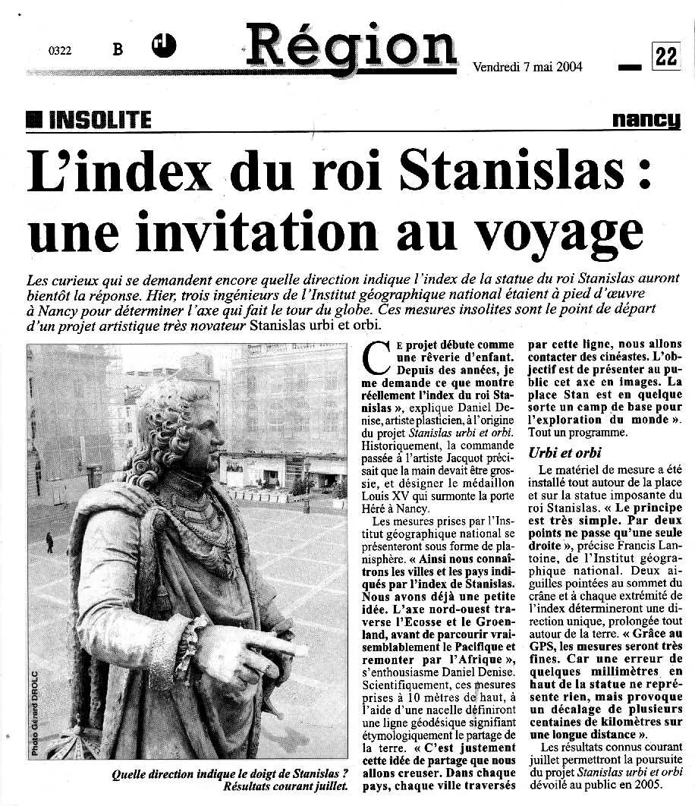
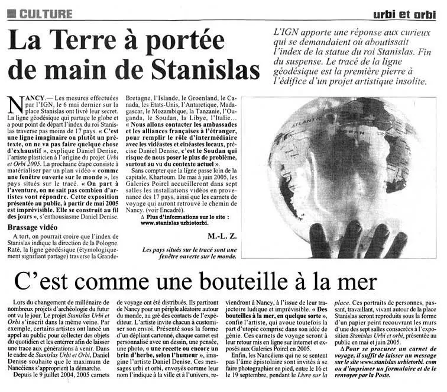
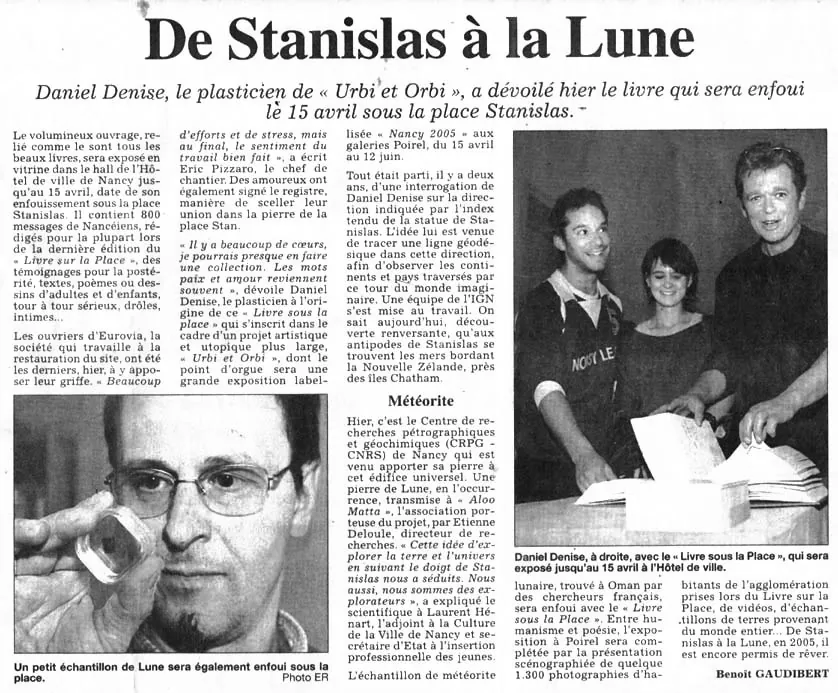